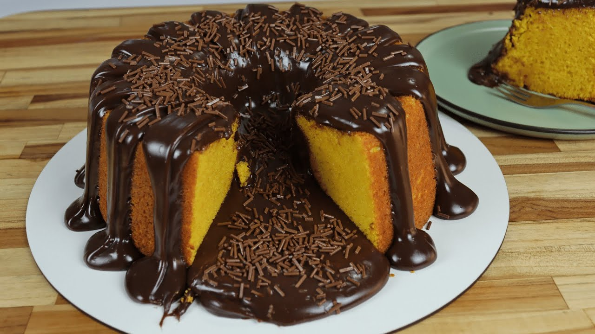

Bolo de Cenoura com Cobertura de Brigadeiro

Ingredientes
Massa
- 4 ovos
- 350g de cenoura crua descascada e picada
- 350g de açúcar cristal ou refinado
- 100g de óleo de soja ou girassol
- 340g de farinha de trigo peneirada
- 20g de fermento químico em pó
Brigadeiro
- 1 lata de leite condensado (395g)
- 1 caixa de creme de leite UHT
- 20g de chocolate em pó
- 100g de chocolate ao leite (não fracionado)
- 30g de manteiga sem sal
Modo de Preparo
Massa
- Bata no liquidificador os ovos, cenoura, açúcar e óleo até ficar homogêneo.
- Transfira para uma tigela e misture a farinha peneirada delicadamente.
- Adicione o fermento e mexa suavemente.
- Despeje em forma untada e enfarinhada.
- Asse a 180 °C por 40–45 minutos, até o palito sair limpo.
Cobertura
- Em uma panela, misture leite condensado, creme de leite, chocolate em pó, chocolate ao leite picado e manteiga.
- Cozinhe em fogo baixo, mexendo até engrossar.
- Despeje quente sobre o bolo desenformado.
- Espalhe bem e deixe esfriar antes de servir.
Peso final: aprox. 1,950kg
Assadeira: 22cm (9cm de altura). Se menor, use 2 formas de 17cm.